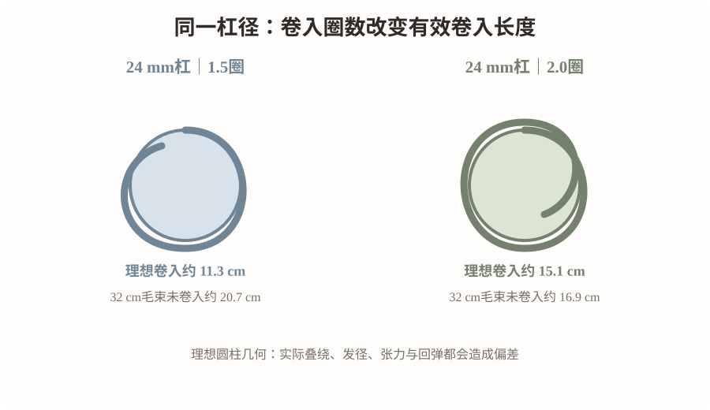
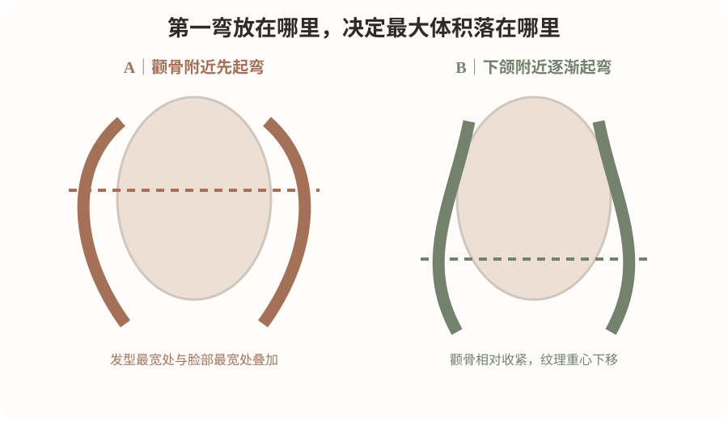
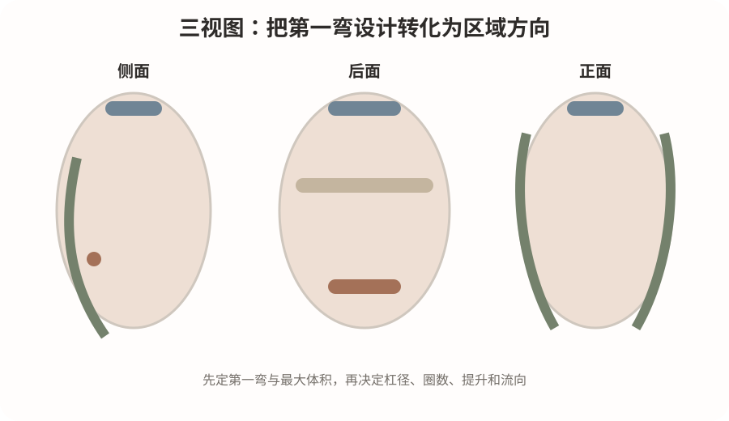

2026-10-13
今日核心问题：同样的发质和杠径，为什么第一弯放在不同位置，会让锁骨中发呈现显脸小、显轻盈，或相反显脸宽、显头大的完全不同结果？
今日核心问题
第一弯的“视觉出现位置”不是由杠径单独决定的，而是有效卷入长度、发型层次、发根方向、实际形变与造型共同决定。
几何第一弯
：毛束从未卷入的相对直段，进入杠体形成弯曲的起点。
视觉第一弯
：洗吹后站立状态下，顾客或发型师第一眼能看到的明显弯曲位置。两者并不一定重合。
热烫时，TGA等适配配方的还原作用改变角蛋白体系部分二硫键的交联约束；水分使发纤维材料更容易发生形变；杠子规定初始曲率，张力和发根提拉决定局部形变分布；加热、干燥及氧化定型参与稳定新的形态。完成后，毛发自身回弹、重力、层次长短、卷度衰减及吹整方式，进一步改变最终视觉弯位。
关键区分：
卷入的几何长度可以近似计算，但“洗完吹干第一弯恰好位于下颌”不能由公式直接保证。
安全边界：
你店内的“软化百分比”“pH档位”可以作为操作记录术语，但不能直接等同于二硫键断裂百分率。CA等简称也必须按产品全成分和说明书确认活性还原体系；绝不以简称或pH单独推断安全药力。

检索重点为2026年10月6日至13日。未检索到足以直接建立“第一弯位置与杠径、圈数”门店定量标准的近7日高质量原始研究，因此采用已发表的机制研究；它们支撑材料原理，不直接证明下面的设计角度。
原始研究｜2026年5月26日 · Applied Spectroscopy
Structure Evolution in Hair Fibres During Strain and the Effect of Relative Humidity
核心结论：
研究用拉曼光谱与广角X射线散射，在受控湿度下原位观察发纤维受拉伸时的结构变化。水分影响基质行为，并改变中间丝发生构象转变的应变条件。
证据强度：中
｜双技术交叉验证的材料实验；
能支持：
张力与湿度不是可忽略的背景条件。
不能证明：
某个卷杠角度、圈数或含水率一定做出最美S弯。
来源：
DOI 10.1177/00037028261457150
综述｜2024年5月11日 · International Journal of Cosmetic Science
Chemical bonds and hair behaviour—A review
核心结论：
毛发的表现不能只归因于单一二硫键。氢键、离子相互作用、疏水作用和二硫键在化学、机械、热作用下共同变化。
证据强度：中—强（机理综述）
｜系统梳理不同作用力；
能支持：
“同药、同杠”不能自动保证同卷度。
不能证明：
具体锁骨发的排杠地图或最优杠径。
来源：
DOI 10.1111/ics.12967
原始研究｜2021年6月30日在线 · Biophysical Journal
Perm-waved human hair: a thermorheologically complex shape memory composite
核心结论：
烫后毛发的弯曲恢复具有复杂时间—温度相关性，且没有简单的60°C“形状记忆开关”。
证据强度：中
｜直接研究烫后毛发弯曲恢复，但样本与条件有限；
能支持：
加热时间和温度作用复杂。
不能证明：
任何固定温度、时间组合适合所有发质。
来源：
DOI 10.1016/j.bpj.2021.03.044
这三项研究均没有把“宽颧骨适合从下颌起弯”当成科学定律；这属于下面的设计推演。
案例属性：
依据真实门店常见条件构建的模拟教学情境，并非已经获得授权、可核实的某位顾客实录；所有参数仅作设计与毛束测试参考。
顾客画像与需求
34岁，偏宽颧骨、下颌轮廓柔和，顶部略扁、后枕略平、颈部中等偏短；长度锁骨下约4cm，中低层次，整体发量中等，发丝偏细但并非极软，自然卷不明显；新生段健康，三个月前染过深棕色，无漂发史；尾部约4cm轻度干涩，湿态回弹正常，无明显断裂；平时只愿吹到八成干、手抓整理3—5分钟。
顾客拿来一张“慵懒法式S弯”参考图，要求：“不显成熟，显脸小，不要从太阳穴就卷。”参考图因未取得原片，使用下方
教学示意图
说明，不冒充真人前后对比。
诊断先后顺序
先美感：
避免颧骨高度形成最大横向体积；轻抬顶区，让第一明显弯曲在下颌附近或略下，后颈不堆积。
再发质：
分根、中、尾确认发径、弹性、化学历史和试束结果。
最后技术：
分区确定卷入长度、发根方向、圈数与杠径。
剪裁、药水和软化判断
剪裁：
底线保留密度，中低层次建立下半区形变空间；脸周选择能与下颌线自然衔接的层次，不在颧骨附近骤然大量打薄。
还原体系：
按产品说明、测试发束与根中尾损伤差异确定TGA或其他合规体系；如使用店内标记为CA的配方，须先核对全成分、还原剂实际浓度及与其他产品是否允许混用。
pH或药力：
没有具体商品浓度与厂家数据，本案不编造pH范围，更不能从pH直接推算“软化80%”。
涂放顺序：
按风险较高区和容易处理不足区分区规划，计入第一片与最后一片实际接触时间差；先做离体毛束试卷和湿态回弹评估。若发丝湿态黏滑、回弹明显异常或断裂增加，应停止该发段处理。
冲水／上杠：
彻底按厂家流程冲洗，统一毛巾轻压吸水方式；发片厚度以能均匀贴杠、无折尾为准，张力保持一致、不过度牵拉。卷入圈数见后文表格。
热处理／氧化：
加热温度、时间、干燥终点和二剂定型完全遵循设备与配套药剂说明，再由离体毛束确认。你门店过往的经验温度、时间只能作比对基准，不能未经验证套用于此顾客。
成品判断：
自然吹干状态先看第一弯、卷度重心与下摆，随后观察洗后回弹、毛躁及顾客整理难度。
失败风险与处理边界
如果颧骨附近显得更宽，优先重新评估剪裁层次、第一弯位置和吹整方向，
不要直接强加药重新烫
。如果尾部折痕，应先排查发尾纸、卷入张力、绕圈角度及尾部损伤；若发生结构失稳，停止化学处理并讨论修剪或暂缓烫发。
预期成品与居家打理
自然吹干后应是顶部略蓬、颧骨附近不过宽、下颌附近开始呈现舒展S弯、发尾保留柔和C形收束。居家操作以低强度吹干顶部根向、下段轻抓卷为主；若顾客平时只自然干，须事先告知可见弯度与参考图中造型状态会有差异。
站在镜前看顾客，先画三条线：
脸部最大宽度线
、
下颌转折线
和
肩颈连接线
。然后决定哪个位置需要高度、哪个位置需要纹理、哪个位置不应形成最大体积。
正面：
检查“最宽的是颧骨还是发型轮廓”？脸旁不要出现突然向外扩张的折点。
45°：
看颧骨到下颌的第一弯是否顺滑，脸周与耳后层次是否衔接。
侧面：
后枕轻支撑即可，后颈控制毛量与外翘；不要为了顶区蓬松牺牲整体头肩比例。
人物适配不是统一的“显脸小公式”：
如果人物是窄长脸，两侧在颧骨附近适度扩展反而可能更协调；如果发量特别多，先控制下半区重量，再谈增加卷度。

本课配三张原创教学示意图，并与文字逐一对应：
图1用于解释核心科学或几何原理；图2用于人物美感与轮廓重心比较；图3用于头部分区、排杠方向与区域衔接。
这张图看什么：固定24mm理想圆柱时，1.5圈与2圈对应的有效卷入长度不同；这是几何教学模型，实际叠绕、发径、张力和回弹都会造成偏差。
这张图看什么：左侧将最大体积放在颧骨附近，右侧把主要纹理下移并保持颧骨区相对收紧；这是设计假设，不是真人效果对照。
这张图看什么：雾蓝表示顶区轻支撑，鼠尾草绿表示脸周流向，燕麦米表示枕骨圆度，淡陶土表示后颈控体积；不能当作实际杠数复制。
所有图片均为教学示意，不是真实顾客改造前后、科研原图或可直接复制的施工处方。
图中“卷入圈数”表示毛束围绕杠体的近似旋转次数，只用作设计验证。真实发型还要确认实际发丝长度、杠径、绕卷重叠、左右镜像关系和松紧是否一致。
区域
设计目标
经验教学参考
必须观察的风险
顶区
轻支撑，保留发根方向
提升60–90°；可测试24–28mm，低张力
压根、炸根、顶部断层
枕骨
建立侧面后脑圆度
提升45–75°；可测试22–26mm，与顶区错位衔接
后脑鼓包、上下卷径突变
两侧
颧骨附近控宽，下颌附近起弯
提升30–60°；测试24–28mm，左右流向镜像核对
脸旁突然外翻、左右不对称
后颈
轻盈下摆，不堆积
提升0–45°；较大杠或按风险选择不烫
尾部翘乱、颈部显短
刘海／脸周
顺接下颌与发际线
根据毛流与实际长度单独试卷；不固定号数
折痕、脸周方向冲突
以上毫米数与角度属于“门店训练用候选值”，不是文献结论或厂家说明；提升角度按局部头皮切线为0°进行约定，不同师傅需统一测量口径。不同厂家的“16号/18号”并非必然对应固定毫米数。
同杠径却起弯不同：实操核对四件事
①有效卷入长度：
卷入约1.5圈与2圈时，根部留下的直段不同。
②杠位：
同一发片在头皮的投影位置改变根部流向。
③剪裁层次：
短层次会让弯在较高位置可见，长层次可能因重量拉低视觉弯位。
④张力与湿态：
改变形变传递，不一定等比改变最终卷径。
不要把“卷得更紧”误认为“设计更好”。今天先确认卷从哪里开始，以及这一弯是否真正服务于人物比例。

先问五个问题：最想改变头顶、脸旁还是下摆？照片中最喜欢的是弯的位置还是卷的强度？吹干后能接受多蓬松？愿意花几分钟打理？近期烫染漂和头发断裂情况如何？
“你这张参考图最重要的不是杠子有多大，而是
脸旁不堆卷、弯从下颌附近才明显、顶部有一点高度
。你的颧骨位置相对宽，如果把卷从脸旁最高的位置做起来，可能反而显宽。我们会先看你这段长度和发质适不适合，再把主要纹理放到下半区。吹干后的自然状态会比照片里抓过的效果松一些，想更接近照片，还是需要简单吹整。”
最后邀请顾客用手指确认“希望第一明显弯从哪里开始”，将模糊语言变成双方能看到、可以拍照留档的目标；同时明确不能保证与参考图完全相同。
观察题：
两位顾客均为锁骨下4cm、发量中等、发质健康。甲颧骨较宽、下颌窄；乙窄长脸、额头较高。两人都要求“自然S弯、显脸协调”。你会把第一明显弯都设在下颌以下吗？如果只有24mm杠，怎样通过卷入长度试出差别？
点这里展开：参考答案与思维路径
不建议机械统一。
甲应谨慎避免在颧骨最宽处形成最大体积，优先观察下颌附近或略下的第一弯；乙可以试探将可见弯曲稍提前、在两侧增加适度宽度，以平衡过长的纵向比例。
判断顺序：
①先画人物宽度与下颌转折线；②确定希望收紧和扩张的区域；③毛束上固定杠径，分别测试1.5、2.0圈得到不同有效卷入长度；④观察卸杠、吹干和24小时后视觉第一弯位置；⑤再决定临床可接受的药剂和加热流程。
常见误判：
把“几何卷入起点=肉眼第一弯”或“多半圈一定更卷”写成定律。
目的：
低风险验证“同一杠径，卷入圈数如何影响几何起弯与自然吹干后的视觉起弯”。它只验证机械卷绕和暂时定型的方向，不等于化学热烫持久度证据。
材料：
同批次、同长度（建议32cm）的离体毛束至少6束，24mm实测圆柱杠，尺、发夹、喷壶、称重工具、手机和统一拍摄背景。
唯一主动改变因素：
A组卷入1.5圈；B组卷入2.0圈；各至少3束。其它保持相同：毛束重量、发质、梳顺、湿润方式、卷杠型号、张力口径、干燥环境、固定时间与摄影机位。因卷入圈数变化必然伴随卷入长度变化，这两者不能在此实验中独立分离。
操作：
统一湿润到相近重量，尾端开始绕杠，不用化学还原剂、不使用高温；自然干燥至相近终点后拆杠。立即拍正面、45°、侧面，对齐发根基准线量“第一明显弯”距离，24小时后重拍；再统一清洗一次观察变化。卷度若在清洗后消失属正常，不据此否定化学热烫的成形机制。
组别
实际圈数
初次起弯距根
24h起弯距根
洗后卷形
照片编号
A1–A3
1.5圈
待填
B1–B3
2.0圈
待填
转成门店标准：
只有在同一发质类别、同一器械、同一测量口径下重复稳定，才能把“某杠径与某圈数的候选弯位”写进实验SOP；不能将1.5圈、2圈直接推广为所有顾客的C/S卷公式。
一个原理：
化学交联决定能否形成稳定曲率，而有效卷入长度、发型层次与回弹共同决定卷从哪里被看见。
一个错误：
只换大杠小杠，却不核对第一明显弯是否落在顾客需要修饰的位置。
明天观察：
在45°视角下，第一弯是否从脸旁最宽区域顺畅过渡到下颌。